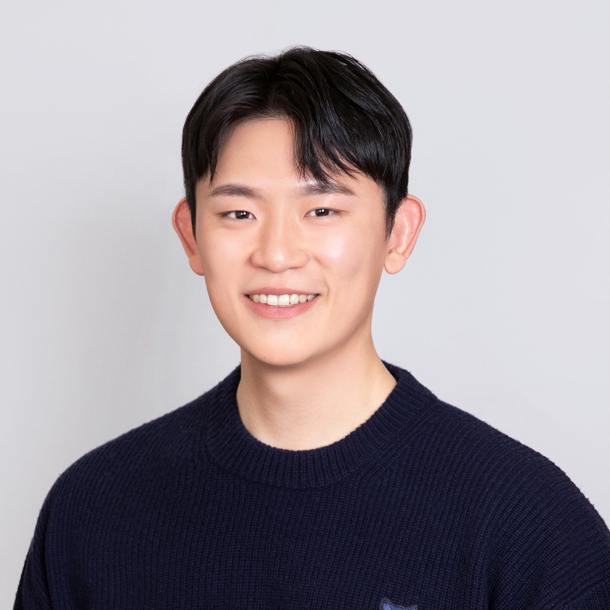
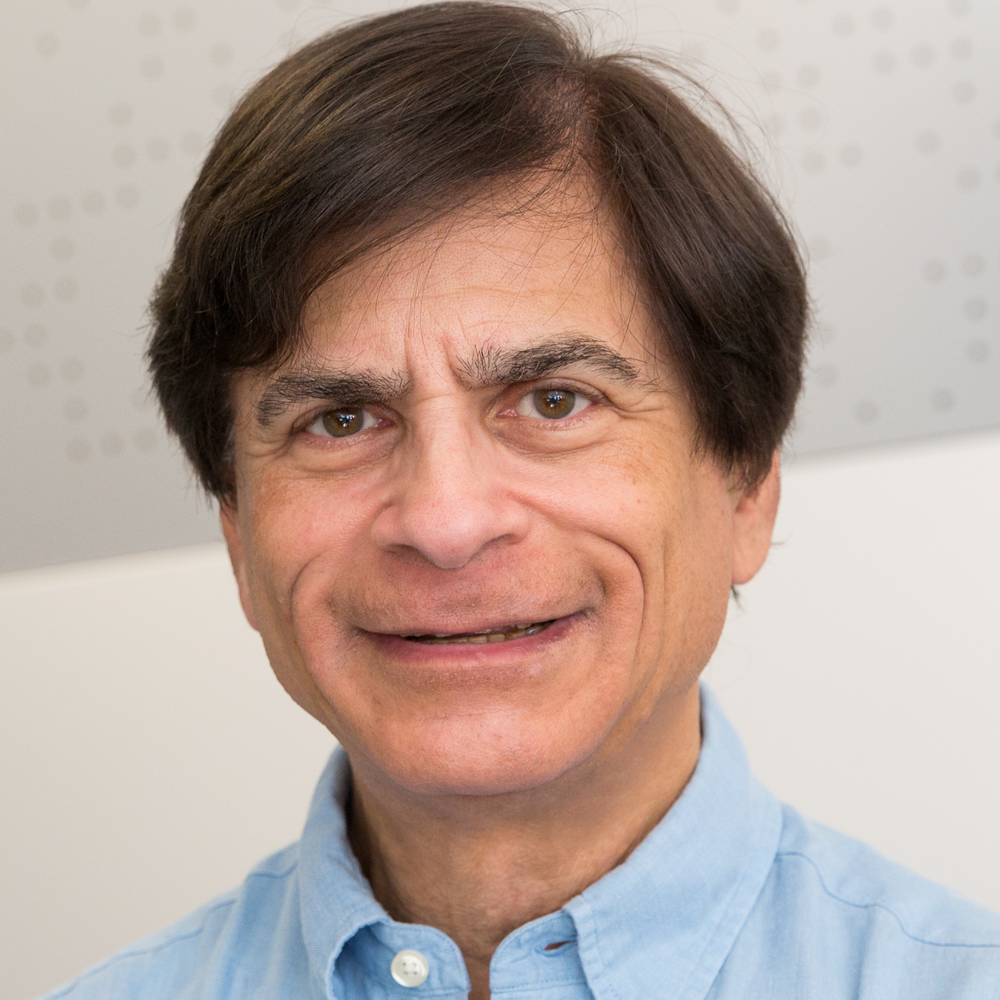

Workshop archive · IEEE ISMAR 2026 · Bari, Italy
XRMemory: 4th International Workshop on Spatial Memory in XR
A half-day in-person workshop on recording, representing, replaying, and sharing dynamic spatial experiences through XR, AI, graphics, spatial computing, and HCI.
Overview
XRMemory focuses on the emerging challenge of recording and representing spatial experiences in a way that supports adaptive playback, particularly within XR environments.
While photos and videos have long served as passive memory aids, AR/VR technologies and spatial computing now enable the capture of experiences that are immersive, interactive, and reconfigurable. These experiences may include recorded scenes, virtual avatars, AI agents, and other immersed and non-immersed humans.
The workshop brought together researchers across AI, XR, graphics, HCI, spatial computing, and large language models to investigate the technological foundations for capturing, recreating, and sharing dynamic spatial experiences.
Submission Dates (Archived)
All deadlines have passed. Deadlines were 23:59:59 Anywhere on Earth (GMT/UTC-12:00).
Topics of Interest
AI-Driven Recall
Techniques for enhancing spatial memory recall in XR.
Experience Capture
Methods for capturing and reconstructing personal experiences in immersive spaces.
Scene Understanding
Semantic content reconstruction, scene graphs, and spatiotemporal segmentation.
Multisensory Memory
Visual, auditory, and haptic integration and their impact on memory.
Adaptive Playback
Interactive re-experiencing, fidelity, reliability, and user-centered replay.
Agents and Avatars
The role of avatars, AI agents, and LLMs in memory creation and interaction.
Workshop Program
Tuesday, October 6, 2026. All times are local to Bari. Room: Sezione 6+7.
14:00–14:15
Opening Remarks and XRMemory Overview
Introduction to the goals and scope of XRMemory research, with emphasis on adaptive playback and immersive memory systems.
14:15–14:45
XRMemory: cognitive offloading or human augmentation?
Keynote by Doug A. Bowman (Virginia Tech)
Prior and current projects in Doug’s lab and their implications for the design of XR memory systems.
14:45–15:00
Using Physical Modeling, Machine Learning, and Virtual Reality for Replicating the Ancient Greek Lyre
Benjamin Stein (Aalborg Universitet), Razvan Paisa (Aalborg University)
15:00–15:15
Physiological Memories in Extended Reality: A Discussion on Opportunities and Challenges
Chuyang Zhang (University of Calgary), Hyeongil Nam (Hanyang University), Kangsoo Kim (University of Calgary)
15:15–15:30
Artificial Memory Machines: TeleAbsence, Gaussian Splatting, and Interactive AI Agents for Immersive Memory Design
Daniel Pillis (MIT), Hiroshi Ishii (MIT)
15:30–16:15
Coffee Break
Coffee in Cassiopea, followed by group discussions in Sezione 6+7.
16:15–17:45
XRMemory Topic Group Discussions
Four discussion groups: Defining XRMemory and Its Scope; Capturing and Representing XRMemory; Reconstructing and Experiencing XRMemory; and Preserving and Governing XRMemory. With organizer facilitators, groups considered key questions, current capabilities and limitations, and future research directions. The program included group reports, plenary synthesis, and closing.
Call for Papers (Closed)
The submission period is closed, and all deadlines have passed. The information below is retained for reference. XRMemory invited 2 to 6 page papers, excluding references, formatted according to the IEEE Computer Society VGTC conference standards.
Position Papers
Unique insights, opinions, and forward-looking ideas.
Research Papers
Latest advancements, results, applications, and systems related to spatial memory in XR.
Survey Papers
Comprehensive views of the research landscape, gaps, and future opportunities.
Project Papers
Approaches and objectives of ongoing or planned projects.
Submission Guidelines
- Originality
- All papers should be original works that are not under review by any other journal or conference.
- Format
- Submissions must be written in English and formatted according to the IEEE Computer Society VGTC conference standards.
- Templates
- Templates are available at tc.computer.org/vgtc/publications/conference/.
- Submission
- Papers were submitted electronically in PDF format through Microsoft CMT.
- Review
- The call specified single-blind review by the international program committee: author names included, reviewer identities withheld.
- Publication
- The call specified submission of accepted papers for inclusion in the IEEE Digital Library, with camera-ready versions prepared in IEEE VGTC format.
Organizers


Program Committee
The workshop’s listed international program committee comprised the organizers and invited members.
Dooyoung Kim (La Trobe University), Woontack Woo (KAIST), Steven K. Feiner (Columbia University), Doug A. Bowman (Virginia Tech), Kangsoo Kim (University of Calgary), Gun A. Lee (Adelaide University), and Niall L. Williams (Barnard College, incoming).
Acknowledgment
The Microsoft CMT service was used for managing the peer-reviewing process for this conference. This service was provided for free by Microsoft and they bore all expenses, including costs for Azure cloud services as well as for software development and support.
Contact
For inquiries about XRMemory at IEEE ISMAR 2026, contact the organizers at dooyoung.me@gmail.com.